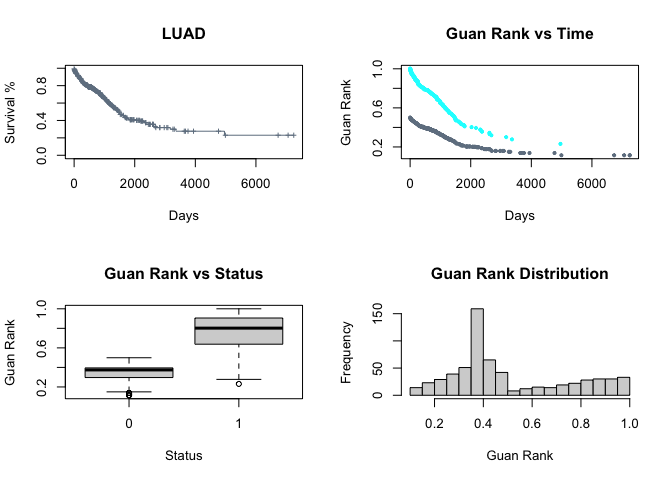

Overview
An R Package for computing Guan Rank, which transforms survival data in to an easy to model ranking
The method was used in many of Prof. Yuanfang Guan’s top performing DREAM Challenge models
Installation
Install the released version of GuanRankR from Github:
remotes::install_github(repo = "Systems-Methods/GuanRankR")Or:
remotes::install_git(
'https://github.com/Systems-Methods/GuanRankR.git'
)Or install the development version
remotes::install_github(repo = "Systems-Methods/GuanRankR",
ref = "develop")Example
Example Data
First we can use the {UCSCXenaTools} package to download an example mRNASeq dataset.
dat <- UCSCXenaTools::getTCGAdata(project = "LUAD",
clinical = TRUE,
download = TRUE,
quiet = TRUE)
#> This will check url status, please be patient.
#> All downloaded files will under directory /var/folders/f8/kyzn816j4pn7wwt6kb95xg1w0000gn/T//Rtmp8mPBUY.
#> The 'trans_slash' option is FALSE, keep same directory structure as Xena.
#> Creating directories for datasets...
#> Downloading TCGA.LUAD.sampleMap/LUAD_clinicalMatrix
clin <- data.table::fread(dat$destfiles, data.table = FALSE)Create Survival Data and Run Ranks
survData <- data.frame(
time = ifelse(!is.na(clin$days_to_last_followup),
as.numeric(clin$days_to_last_followup),
as.numeric(clin$days_to_death)),
status = dplyr::recode(
clin$vital_status, 'LIVING' = 0,'DECEASED' = 1, .default = NA_real_
)
)
gr <- GuanRankR::calculate_guan_rank(surv_data = survData)Plotting Results
Col <- as.vector(factor(gr$status, labels = c('slategrey', 'cyan')))
par(mfrow = c(2,2))
plot(survival::survfit(survival::Surv(gr$time, gr$status)~1), xlab = "Days",
ylab = "Survival %", conf.int = FALSE, mark.time = TRUE, col = "slategrey",
cex = .5, main = 'LUAD')
plot(gr$time,gr$guan_rank, pch = 19, col = Col, cex = .5, xlab = "Days",
ylab = "Guan Rank", main = "Guan Rank vs Time")
boxplot(gr$guan_rank ~ gr$status, xlab = "Status", ylab = "Guan Rank",
main = "Guan Rank vs Status")
hist(gr$guan_rank, breaks = 30, xlab = "Guan Rank",
main = "Guan Rank Distribution")
Code of Conduct
Please note that the GuanRankR project is released with a Contributor Code of Conduct. By contributing to this project, you agree to abide by its terms.